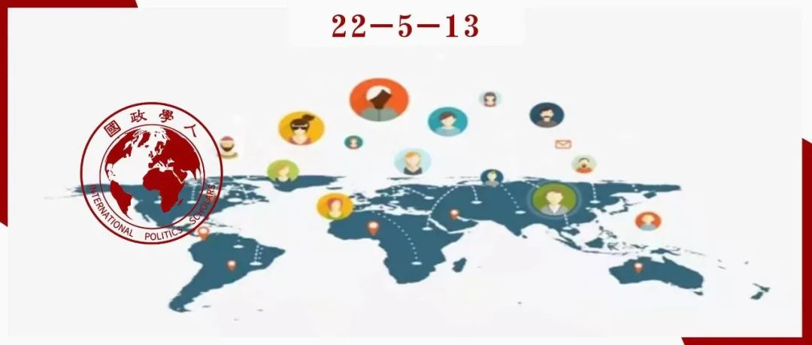

收录于合集

全球化、国际流动性与自由国际秩序
作者： Jeannette Money，加利福尼亚大学戴维斯分校政治学教授。
编译： 穆若彤（国政学人编译员，中国人民大学PPE）
来源： Jeannette Money. Globalization, international mobility and the liberal international order. International Affairs , 97: 5 (2021) 1559–1577; doi: 10.1093/ia/iiab1

**
**
本文探讨了全球化的一个重要概念——“国际流动性”。作者认为，国际流动性的管理给核心国家带来好处，因此，国际流动性的基础仍是国家偏好而非自由国际秩序的原则。通过这种方式，作者解释了国际流动性和自由国际秩序间并不协调的关系。
作者将“国际流动性”分解为旅行机制、自愿（劳工）移民机制与难民机制，并提供证据表明，与全球化的其他维度相比，全球化和自由国际秩序在国际流动性上并不十分明显。作者考察了将国际流动性与自由国际秩序联系起来的相关研究，并认为受益于现状的国家不愿以纳入自由主义原则的方式修改该体系。
新冠疫情下，这种倾向被不断强化，文章不仅很好地解释了现实现象，也为我们理解“全球化”与“逆全球化”提供了一种不同的思路，即在一定程度上，国际流动性等因素尽管在传统观点看来反映了全球化，但在实际上是与自由国际秩序分隔开来的，而其背后则有着深刻的国家利益原因。
编译
01
国际流动性与自由国际秩序
结合Ikenberry（2020）与Lake等（2021）对自由国际秩序的描述，与研究国际流动性和自由国际秩序最相关的要素是国家主权平等、多边主义、人类平等和资本主义市场经济。Ikenberry强调国家主权，这意味着国家对政策选择的单方面控制；Lake等则使用了更加狭义的术语，即“国家主权平等”，威斯特伐利亚意义上的主权在自由国际秩序中受到多边主义固有的权力集中和授权的限制。
人类平等是自由国际秩序中自由主义部分的核心。不同于其他学者将民主、法治和人权列为该秩序的主要特征，本文强调无国籍差异的个人平等待遇。除此之外，自由国际秩序还基于资本主义市场经济的原则，这意味着无论是在国内还是国际上，经济都是相互依存的。理论上，如果上述原则得到应用，自由国际秩序就能够并且应当包括人员的跨境流动。然而，自由国际秩序的核心国家已经制定了一些机制来规避这些原则，这种机制在全球流动性的三个领域中都是可见的，因此全球流动性机制“面向保护主义和排斥”（Virginie Guiraudon & Gallya Lahav, 2002）。
02
国际旅行机制（The international travel regime）
国际旅行机制包括所有通过合法入境口岸跨越国际边境的个人，其为那些出于“任何目的和时间长度”跨越国际边界的人——劳工移民、难民、游客、商务旅行者、国际学生、家庭成员和其他人提供了规则。每年跨越国际边界的个人流动量远超国际移民总数，因此国际旅行机制比其他流动机制影响的个体范围更加广泛。
国际旅行是自由国际秩序中最符合全球化的流动机制。由于运输和通讯技术的进步，国际旅行的成本大幅下降，而购买力增强的全球中产阶级也在扩张。国际旅行是经济相互依存的一个部分，有助于创造新市场和建立国际商业伙伴关系，并代表着通过旅游业销售国际服务的方式。
国际旅行机制通过多边机构制定的标准进行管理。这些标准允许各国通过护照、签证和边境检查来控制个人跨越国际边境的流动，为旅行提供“安全便利”（secure facilitation）。“安全”是一种迹象，表明各国将国际越境者视为潜在威胁，并希望建立机制来转移恐怖分子、罪犯和疾病传播，以及控制移民。同时，无论是在促进经济一体化方面，还是在创造利润丰厚的国际服务业方面，“便利化”都是承认旅行是全球化的一个重要组成部分。
多边组织在完成其核心任务的同时定义了管理国际旅行的标准。这些政府间组织在过去几十年中发挥了作用，提供了相对健全的规则和条例体系，国家通过遵守该体系来控制国际旅行。各国继续在执行和补充这些规则和条例方面发挥核心作用，并通过免签证方案等政策进行双边和区域合作。除此之外，欧盟等区域性组织也在国际旅行上多有合作。
虽然国际旅行是全球化的一个标志，但它不一定反映了基于国家主权平等、人类平等和资本主义市场促进经济相互依存的国际体系的自由基础。尽管在多边机构体系内开发的工具使旅行变得更加便捷，但目的地国以单边规则作为多边规则的补充，仍能够根据各自的目标和偏好来限制来自不同国家的旅行者，这种限制往往是通过签证的发放实现。新冠疫情大流行导致了旅行机制的崩溃，大多数国家单方面对大多数旅行者关闭了边境，以遏制新型冠状病毒的传播，这扭曲了国际旅游体系，削弱了其中自由主义的成分。
03
自愿移民机制（The voluntary migration regime）
自愿移民机制是全球流动性体系的第二个部分。本文的“移民”仅包括非难民的个人，作者使用“自愿”移民制度一词，因为其包括为就业目的而移民的个人，也包括与家庭成员一起移民或与家庭成员团聚的个人，这些家庭成员可能被雇佣，也可能不被雇佣。
自愿移民机制在多边国际组织和越来越多的条约中制度化，并得到区域和双边协定的补充。
在多边层面上 ，国际移民组织（International Organization for Migration, IOM）是一个政府间机构，其预算主要基于自愿捐款，因而也对提供资金的个别会员国的需求作出了回应。国际移民组织是一个保留联合国原有管理和预算结构的“相关组织”，也没有权力强迫各国向自愿移民敞开大门。
在区域层面上 ，一些区域组织有保障行动自由的目标，允许成员国公民在其他成员国生活和工作，但这些目标很少被写入条约并得到实施。
在双边层面上 ，各国谈判双边劳工协议，以便招聘外国工人。这些协议在二战后的欧洲很常见，因为各国都在寻求经济重建。全球南部经济快速增长的国家，尤其是海湾石油国家，也利用了双边劳工协议。但总体而言，这些只是可以谈判的双边劳工协议中的一小部分。
为了理解管理自愿移民流动的当代体制结构，必须指出三个事实。
首先，自愿移民机制建立在二战后现状的基础上 。 习惯国际法赋予国家对其边界的主权控制权，但同时还要求各国允许其公民自由离开和返回原籍国。这种国家主权的不平衡为目的地国提供了限制和分类移民的权力。
其次，二战以来的移民流动模式主要是“单向”和特定国家的。 大多数移民选择从不那么富裕和稳定的国家转移到更富裕和更稳定的国家，但这些移民并不会在全球范围内均匀分布。相反，流动模式由国家之间的历史和地理联系决定。
最后，二战后的国际体系已经高度制度化。 通过这些机构的各种决策结构，不满现状的国家可能起草和通过那些声称要改变现状的条约，但在自愿移民机制下，那些需要采取行动来实现这种改变的国家却很少遵守这些条约。
这三个事实——现状、独特的移民模式和制度化的国际体系——有助于解释为什么多边条约和国际机构似乎在这一领域提供了一套各国应该遵守但实际上是空洞的规范和标准。尽管存在多边机构，但它们并不反映多边主义的规范基础。事实上，Tanja Basok（2009）认为，关于移民的规范是“反霸权的”，这些协议反映了“对这些原则的合法性缺乏共识，以及大多数主要移民接收国对这些原则的拒绝”。
自愿移民机制有一个复杂的制度框架，最终使目的地国享有特权，允许它们设定自己想要的移民水平和类型。尽管这一机制运作得并不完善，但各国既没有放弃也没有失去对边境的完全控制。与涉及商品、服务和资本自由流动的其他全球化要素相比，该体系致力于限制移民；这样的结果违反了经济相互依存的原则和资本主义市场经济在国际间的自由运作。本文对国际移民机制结构的描述表明，自由国际秩序的核心支柱并没有在此得到很好的体现。
作者认为，新冠疫情对自愿移民机制的影响是暂时的，因为各国，尤其是全球北部的国家，已经建立了控制系统，尽管这些系统并不完善。当疫苗和治疗变得广泛可用时，疫情对全球移民模式的影响可能微乎其微。
04
难民机制（The refugee regime）
难民制度通常被认为是多边自由主义的顶峰。“难民”的概念首先出现在1951年起草的《难民地位公约》（又称《日内瓦公约》）中，该公约对“难民”这一概念作出了定义，阐述了不驱回原则，并列举了难民在庇护国的权利，得到了联合国成员国的广泛认可。然而，早在2019年的新冠疫情之前，各国已在尽可能减少各自需履行的责任，疫情和对自由国际秩序的强烈反对只会加剧难民的困境。
尽管如此，公约中的定义标准仍然存在相当多的缺陷。因此，两项创新举措被采取，用以弥补现存定义的狭隘性。首先是在非洲和拉丁美洲建立区域公约，将保护范围扩大到受暴力威胁的个人，第二是各国承认，不属于公约中的难民定义的人可能需要“补充保护”。然而，进一步的一系列新举措对寻求保护的人产生了更重要的影响，各国努力阻止个人抵达其领土申请庇护，所采用的策略包括“外部化”（externalization）对人员流动的控制，以及采用允许国家将庇护申请人送回原籍国以外的国家的原则。
从表面上看，难民机制似乎是自由国际秩序的核心组成部分，广义的多边主义似乎是通过《日内瓦公约》在广泛认可的不驱回概念（concept of non- refoulement）中确立的。然而，这一机制提供的保护受到各国在制定原则方面的独创性的限制，而这些原则是《日内瓦公约》不加禁止的。因此，尽管各国遵循“法律条文”，却不遵守其精神。
疫情的大流行只会让世界各地的被迫移民（以及其他移民和旅行者）的命运更加恶化。首先，由于移民通常生活在拥挤和不卫生的环境中，而且他们无法获得医疗保健，健康危机更加严重；其次，为控制病毒而实施的封锁所引发的社会经济危机对移民造成了沉重打击；第三，即针对难民的保护危机，迫害和暴力并没有因为疫情的流行而停止，对保护的需求仍在继续。
总之，第二次世界大战后建立的保护制度作为自由国际秩序的核心要素，自全球北方国家首次有寻求庇护者涌入以来，至少在三四十年间都备受攻击。这一观察结果表明，难民机制与旅行和自愿移民机制一样，从来都不是自由国际秩序的核心组成部分。
05
国际流动性为何被排除在自由国际秩序之外？
人们普遍承认，习惯国际法的两项原则对于使目的地国在人员跨境流动中享有特权至关重要。首先是公民离开和返回原籍国的权利。没有这一原则，就不可能有国际移民；第二个反对的原则是国家对进入该国拥有主权。
出境权和入境权之间的不平衡使目的地国既有权对移民进行分类，也有权决定人口跨境流动的程度。除此之外，目的地国规避多边主义的第二个原因在于二战后特定国家的“单向”移民模式，这会产生双边而非多边外部性。因此，目的地国几乎不需要发展多边机构，特别是因为可以在双边基础上以更低廉的成本解决外部性问题。
这些观察结果并没有争议，许多学者认为移民是自由国际秩序的核心；而另一方面，也有一些学者会同意本文作者的结论，即人的跨境流动被排除在自由国际秩序之外。解决这个问题的一个方法是采纳Goodman和Pepinsky（2021）的观点，即移民政策是作为嵌入自由秩序的工具来使用的。“嵌入式自由主义”是John Ruggie创造的术语，用于描述国际体系中的国家在第二次世界大战后建立自由国际秩序时，如何制定战略以保护其公民免受经济融入全球经济带来的混乱。
最初的保护措施主要是通过社会福利网和对资本流动的控制产生的。而Goodman和Pepinsky认为，移民政策也起到了补偿机制的作用。各国在制定移民政策时并不采用国际秩序的自由原则，而是调整移民政策以保护本国人口不受包括国际劳动力市场在内的国际市场变幻莫测的影响。这一立场要求将旅行、自愿移民和难民这三个全球流动机制视为移民控制机制，而不是具有与全球流动性相关具体职能的单独机制。这还表明，全球北方国家中根深蒂固的自由主义的移民层面并没有消失，而是随着自由国家采取更具包容性的成员国政策转向了限制人员流动之上。另一种国内政治方法也可能让我们理解全球流动性为何被排除在自由国际秩序之外。Margaret Peters认为，资本流动和国际贸易降低了全球北方国家对低技能劳动力的需求，因此企业减少了对更高移民水平的游说。
06
结论
国际流动性是当今国际体系中全球化程度最低的领域之一，其组成部分——旅行、自愿移民和难民流动——反映了较低的经济依存程度和最低水平的多边主义，国家主权的平等以及人类的平等也常常被忽视，新冠病毒的大流行加强了这些特征。
为了解释这一现象，作者强调了“现状”，这种状态允许目的地国家采用对这些国家在经济上和政治上都有效的单边政策来调节人员的跨境流动。与促进商品、服务和资本的跨境流动相反，控制全球流动的愿望的国内根源指向两个截然不同的解释因素。第一种观点借鉴了嵌入式自由主义的概念，并认为移民是自由国际秩序的核心，移民存在于自由国际秩序之中，而非作为自由国际秩序的一个部分（‘in but not of ’）。选择管理全球流动性的国家政策是为了补偿因国际市场力量而流离失所的公民；第二种观点认为，国内政治是国家政策选择的核心，国内行为者的政策偏好与政治权力对全球移民治理至关重要。这两种观点都与本文提供的证据一致，也表明应该更仔细地研究全球流动性受不自由待遇的国内根源。
词汇积累
国际流动性 international mobility
自由国际秩序 liberal international order
安全便利 secure facilitation
副产品 by-product
审校 | 聂涵琳 罗洁
排版 | 何婕 刘美彤
文章观点不代表本平台观点，本平台评译分享的文章均出于专业学习之用, 不以任何盈利为目的，内容主要呈现对原文的介绍，原文内容请通过各高校购买的数据库自行下载。